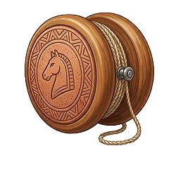
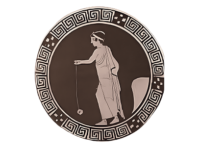
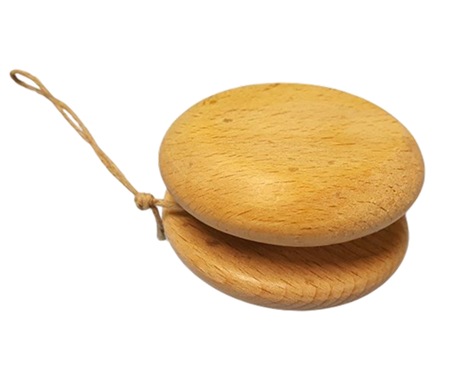
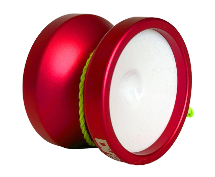

PERIODO ANTICO - DOVE TUTTO HA AVUTO INZIO
LO YO-YO GRECO
Semplice, ipnotico e tecnicamente sfidante: lo yo-yo è molto più di un disco che sale e scende lungo un filo. È uno dei giochi più longevi della storia dell'umanità, capace di evolversi da reperto archeologico a vero e proprio strumento per acrobazie mozzafiato.
UN VIAGGIO MILLENARIO
Sebbene molti lo associno agli anni '50 o '80, le radici dello yo-yo affondano nel passato remoto:
- Grecia antica: Già nel 500 a.C. esistevano dischi di terracotta, legno o metallo usati in modo identico allo yo-yo moderno. Venivano chiamati semplicemente "dischi" e spesso decorati con scene mitologiche.
- Filippine: Qui il "yo-yo" (che in lingua locale significa "vieni-vieni") non era solo un gioco, ma pare venisse usato dai cacciatori per colpire le prede e recuperare l'arma con il filo, sebbene questa resti una leggenda molto discussa tra gli storici.
- Francia Rivoluzionaria: Nel 1700 divenne una moda tra l'aristocrazia francese, noto come joujou de Normandie o émigrette. Si dice che perfino Napoleone lo usasse per scaricare lo stress prima delle battaglie!



OLTRE IL GIOCO
- Materiali spaziali: Gli yo-yo moderni sono realizzati in alluminio aeronautico, plastica policarbonato e dotati di cuscinetti a sfera ad alta velocità.
- Campionati Mondiali: Ogni anno, atleti da tutto il mondo si sfidano in diverse categorie (1A, 2A, fino all'Off-string, dove lo yo-yo non è attaccato al filo).

LA RIVOLUZIONE MODERNA
Il salto di qualità avvenne nel 1928, quando Pedro Flores, un immigrato filippino negli Stati Uniti, aprì la prima fabbrica di yo-yo. La sua innovazione fu geniale: invece di annodare il filo all'asse, lo fece girare attorno ad esso con un cappio. Questa modifica permetteva allo yo-yo di "dormire" (sleeping), ovvero continuare a ruotare in fondo al filo prima di risalire, aprendo la strada a tutti i "trick" e le acrobazie che conosciamo oggi.
